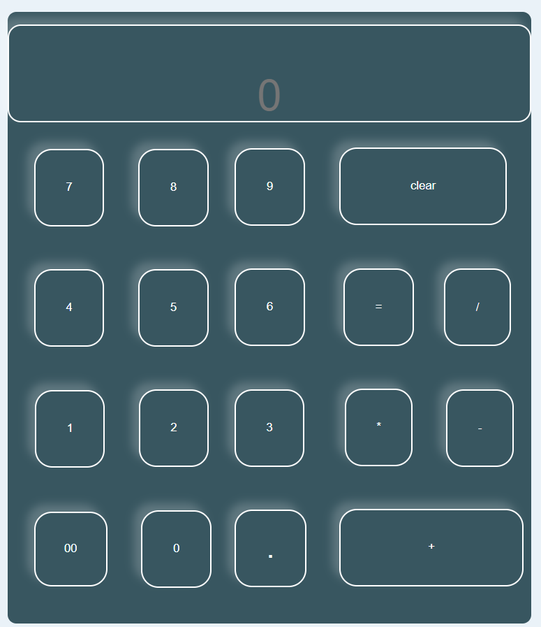
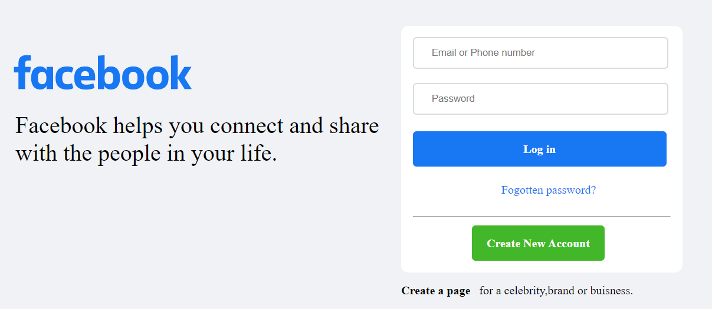

Emergency numbers are crucial in times of crisis as they provide immediate access to essential services such as medical assistance, fire response, and law enforcement. These numbers, typically three-digit codes like 911 (in the United States), are easy to remember and widely publicized. When an emergency arises, dialing the appropriate emergency number can save lives and minimize property damage. Emergency operators are trained to gather crucial information quickly and dispatch the appropriate help to the location. It is important to use these numbers responsibly and only in genuine emergencies, as misuse can divert resources from genuine cases. Being aware of the emergency numbers in your country or region and keeping them readily accessible can help ensure a swift response when every second counts.
Calculators have become indispensable tools in various fields, from mathematics and science to finance and engineering. Their convenience and speed make complex calculations more manageable and efficient. In academics, students rely on calculators to solve intricate equations, perform statistical analysis, and simplify mathematical functions. Professionals in engineering and architecture use calculators to aid in design, calculations, and measurements. Moreover, calculators are valuable in financial planning, allowing individuals to compute loan payments, investment returns, and budgeting. While calculators enhance productivity and accuracy, it is essential to understand their limitations and use them appropriately. They are not substitutes for understanding fundamental concepts and should be used as aids rather than replacements for critical thinking. With proper usage, calculators can be powerful tools that save time and facilitate problem-solving across various disciplines.


The front page of Facebook, also known as the news feed, is a dynamic and personalized hub where users can stay connected and engaged with their social network. It is designed to display a diverse range of content from friends, pages, and groups that users follow or interact with. The news feed algorithm utilizes various factors like relevance, popularity, and user preferences to curate a customized experience. Users can see updates from friends, including their posts, photos, and videos, as well as content shared by pages and groups they are connected to. Additionally, the front page often showcases sponsored content and advertisements tailored to users' interests and demographic information. Users can engage with posts by liking, commenting, and sharing, fostering interactions and conversations within the Facebook community. Overall, the front page of Facebook aims to provide users with a dynamic and engaging experience by presenting a mix of content that is relevant, interesting, and meaningful to each individual user.
Creating a tribute page is a meaningful way to honor and remember someone special. It serves as a digital memorial where memories, stories, and photographs can be shared and cherished by family, friends, and loved ones. A tribute page can be created on various platforms, including social media, personal websites, or dedicated memorial websites. The page can include a heartfelt biography, significant milestones, and achievements of the person being remembered. It provides a space for people to share their thoughts, condolences, and anecdotes, fostering a sense of community and support. Tribute pages can also serve as a central hub for sharing information about memorial services, fundraisers, or charitable causes in the memory of the individual. It is a way to preserve their legacy, celebrate their life, and provide comfort to those who are grieving.
A to-do site plays a crucial role in helping individuals stay organized, focused, and productive. It serves as a centralized platform where tasks, goals, and deadlines can be managed efficiently. By utilizing a to-do site, users can create and prioritize tasks, set reminders, and track progress on various projects. It provides a visual representation of their workload, allowing them to allocate time and resources effectively. A to-do site also promotes accountability and ensures that important tasks are not overlooked or forgotten. With the ability to categorize tasks and create subtasks, it offers a hierarchical structure that aids in breaking down complex projects into manageable steps. Moreover, many to-do sites offer collaborative features, allowing teams to coordinate and collaborate on shared tasks and projects. Overall, a to-do site enhances productivity, reduces stress, and provides a sense of accomplishment as tasks are completed and goals are achieved.
Creating a bot using an Arduino chip opens up a world of possibilities for robotics enthusiasts and hobbyists. Arduino, with its versatility and ease of use, provides a powerful platform for building interactive and intelligent robotic systems. By integrating sensors, actuators, and programming logic, an Arduino-based bot can perform a wide range of tasks. The Arduino chip acts as the brain of the bot, controlling its movements, responding to sensor inputs, and executing programmed behaviors. With the support of a vast Arduino community and extensive libraries, programmers can easily access pre-built functions and code snippets, accelerating the development process. Whether it's a simple line-following robot or a more complex autonomous rover, Arduino enables the creation of bots with diverse functionalities and capabilities. Moreover, Arduino's affordability and accessibility make it an ideal choice for educational purposes, fostering hands-on learning and experimentation. Building a bot with an Arduino chip is not only a rewarding technical endeavor but also an excellent way to explore the exciting field of robotics.
Acheivements:
internship at: 1. Oasis Infobyte 2. Bharat Intern
4 Badges in hacktoberfest
Goodies from: Codechef, Devday, Microsoft Azure, Newton School, AWS, ACM Student Chapter
Java(basic) Certified by hakerrank
Managment Support in ACM Student Chapter
Websites:
calculator
All Emergency Numbers
Facebook Front Page
Experience:
Host of Git and Github Contest Organised in DIT University.
Event Head in coding contest Named Blind Code.
Event Head in CS1O1 workshop.
Made SUMO-Bots using Arduino chip.
Created contest on Codechef.
Experience in frontend development by doing web internships.
Skills:
Frontend Developement.
Poster designing.
Content Writing.
Good Presentation Skill.
Maintain and handle events.
About Me:
Hello and welcome!
I'm Siddharth Jain, a student in 3rd year of Batchlor Of Technology in Computer Science Engineering passionate about Full Stack Development.
My mission is to become Full Stack Developer. I strive to become a very good web Developer. Through my dedication, creativity, and attention to detail, I aim to be better or give my best in web development field.
My expertise lies in Frontend development. From beginner to get knowledge of HTML, CSS, JAVASCRIPT, I possess a deep understanding of Frontend development and stay up-to-date with the latest industry trends.
What sets me apart is my dedication to learn new things. Whether it's my intrest to do something good in this industry, I am doing specialization in Full Stack Web Developement, or also learning about Cloud Computing , I bring a fresh perspective and a drive for excellence to every project I undertake.
Outside of work, you can find me as a poster designing, Good speaker, Presentation Skills, Ledership quality, punchuality towards my work. These passions fuel my creativity and inspire me to deliver innovative solutions.
I invite you to explore my portfolio and discover the projects I've been privileged to work on. If you have any questions or would like to discuss a potential collaboration, feel free to reach out to me at sidu8jain@gmail.com. I look forward to connecting with you and helping you achieve your specific goal in web development."
Feel free to personalize and modify this introduction to fit your unique background and style. Remember to keep it concise, engaging, and tailored to your target audience.
Education:
3rd Year in Batchlor in Technology: Computer Science Engineering CGPA: 8.8 Batch: 2021-2025